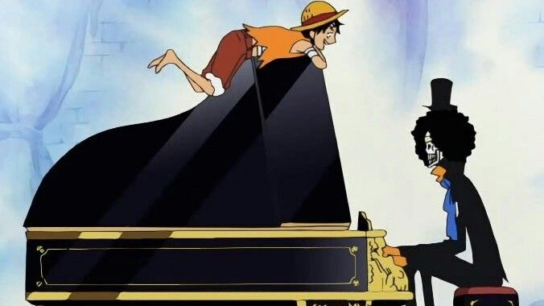
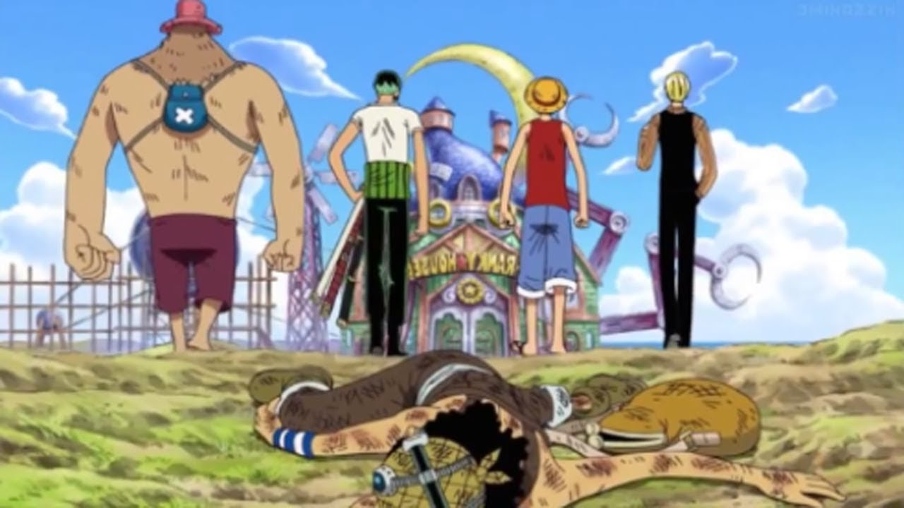
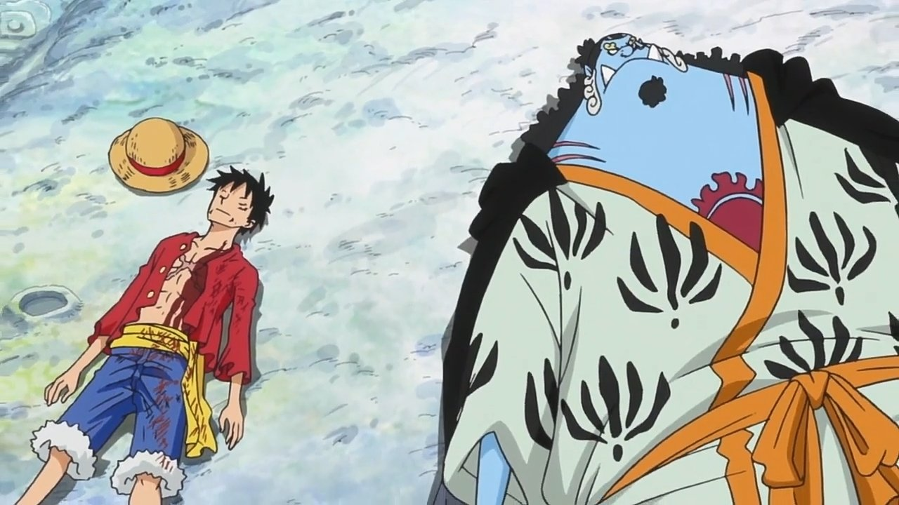
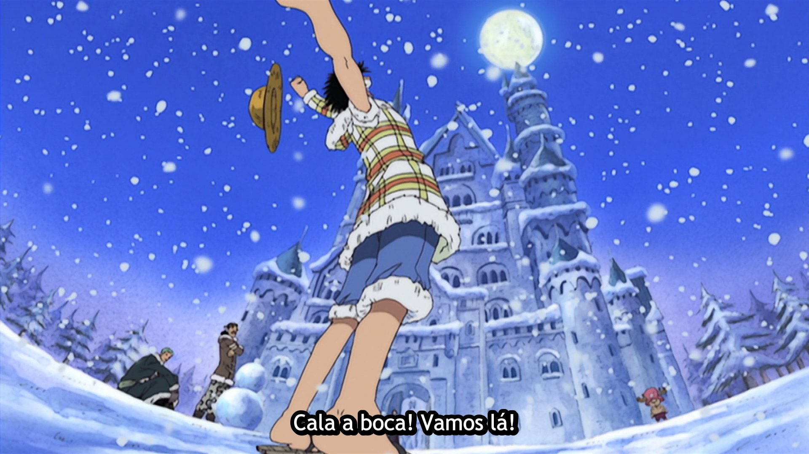
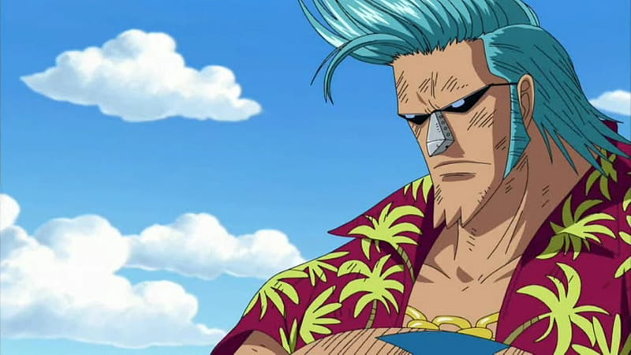
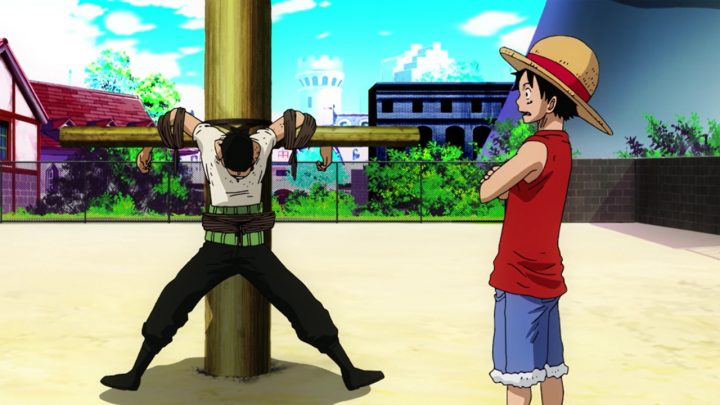
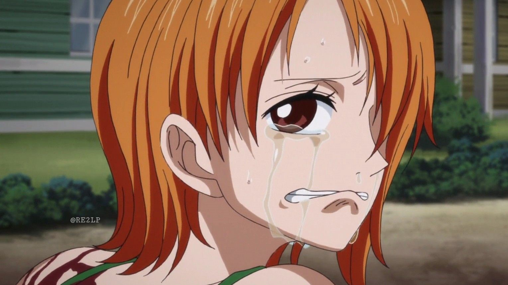
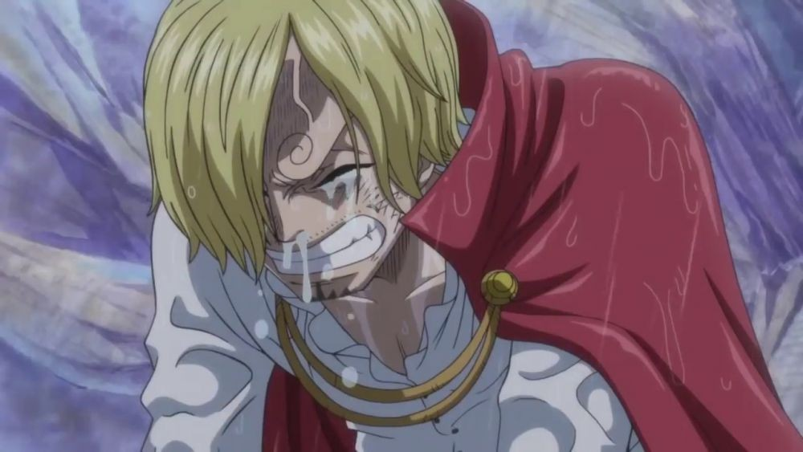
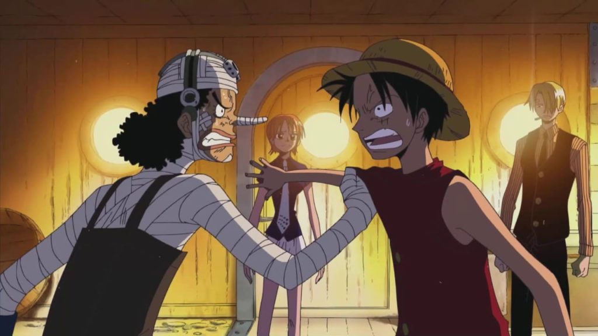
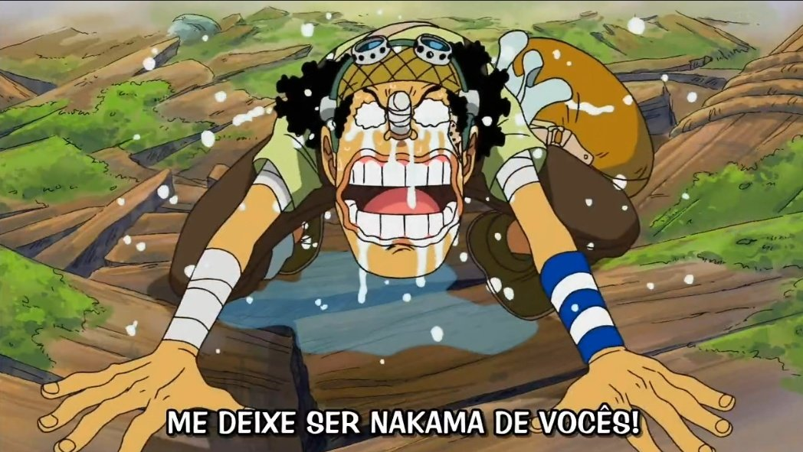

Bink's Sake

Caminhada para a Franky House

Jinbe doa sangue para Luffy

Luffy chama Chopper para o bando

Luffy chama Franky para o bando

Luffy chama Zoro para o bando

Nami - Luffy, me ajuda...


Sanji - Eu quero voltar para o Sunny!

Usopp sai do bando

Usopp se desculpa e volta para o bando